Erradicar la corrupción y la impunidad , eliminar los privilegios y monopolios , romper el presidencialismo , reducir las desigualdades sociales y revolucionar la educación , son algunas de las promesas que hizo Alfonso Portillo al asumir la Presidencia de Guatemala.
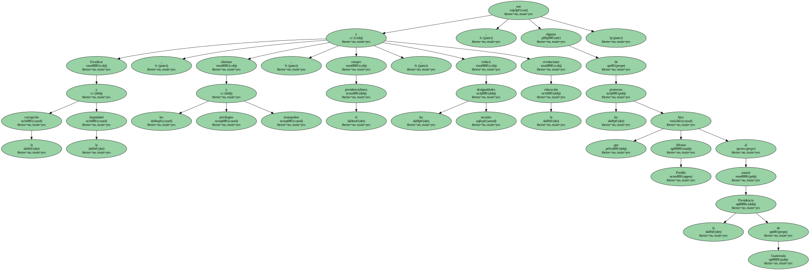El nuevo jefe de Estado dijo que es consciente de que la tarea para cumplir sus ofrecimientos no será fácil , porque habrá resistencias pasivas y activas y " afrontaremos poderosos intereses que tradicionalmente han utilizado al Estado como protector de sus privilegios ".
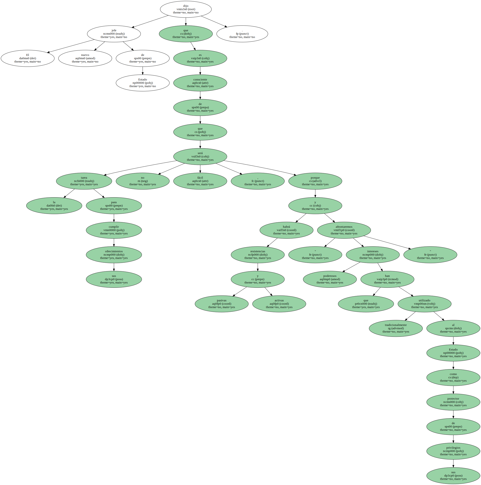Portillo se comprometió a revisar los procesos de privatización que realizó su antecesor , Alvaro Arzú , y garantizar el efectivo control y regulación del Estado en defensa de los intereses y los derechos de los consumidores.
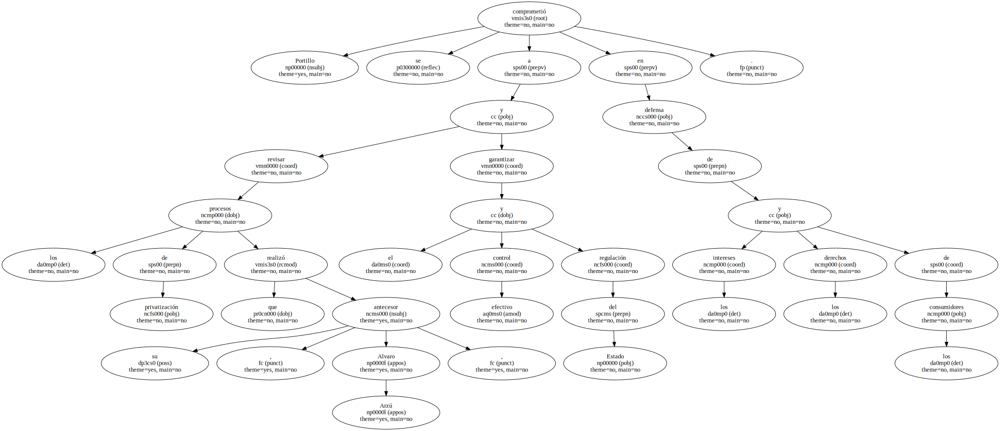Asegurar la equidad económica y no claudicar en el combate contra la pobreza , fomentar la inversión privada nacional y extranjera , estimular una real competencia de mercados , aumentar la competitividad de las empresas y descentralizar el Estado , son otras de las promesas del nuevo gobernante.

El presidente ofreció perseguir penalmente a los que evaden impuestos , revisar las concesiones privadas para la prestación de servicios básicos como la electricidad , agua y teléfonos , y aseguró que fortalecerá la política fiscal como parte del cumplimiento de los acuerdos de paz.
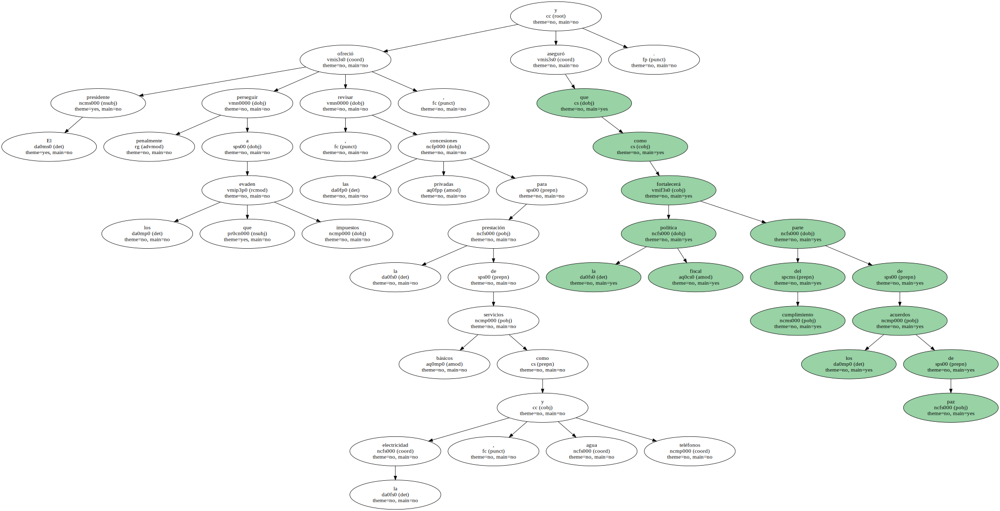Portillo señaló que su país afronta una difícil situación en el campo externo , como efecto de la combinación del mal uso de las políticas económicas con la caída de los precios de los principales productos de exportación.
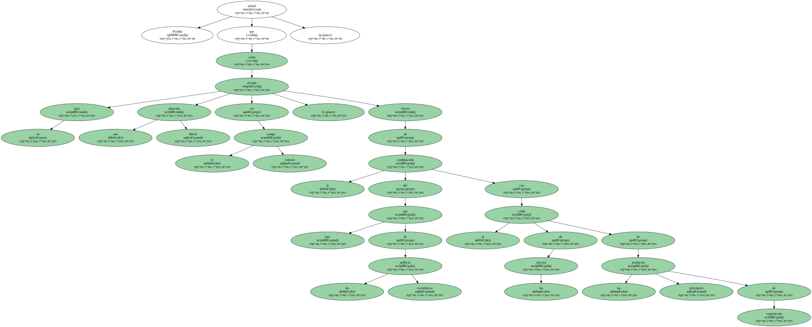En el asunto social , el presidente señaló que la situación de la educación es " vergonzosa " y dijo que se propone hacer una reforma para dar un apoyo político , técnico y financiero para descentralizar este sector.
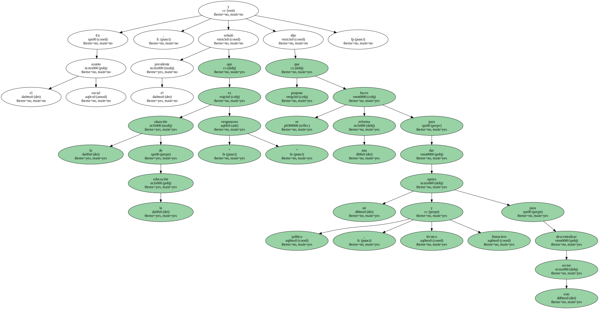También afirmó que impulsará acciones para conseguir las condiciones que garanticen el pleno desarrollo de los indígenas , atender la demanda de tierras y dar participación a las mujeres en las decisiones políticas.
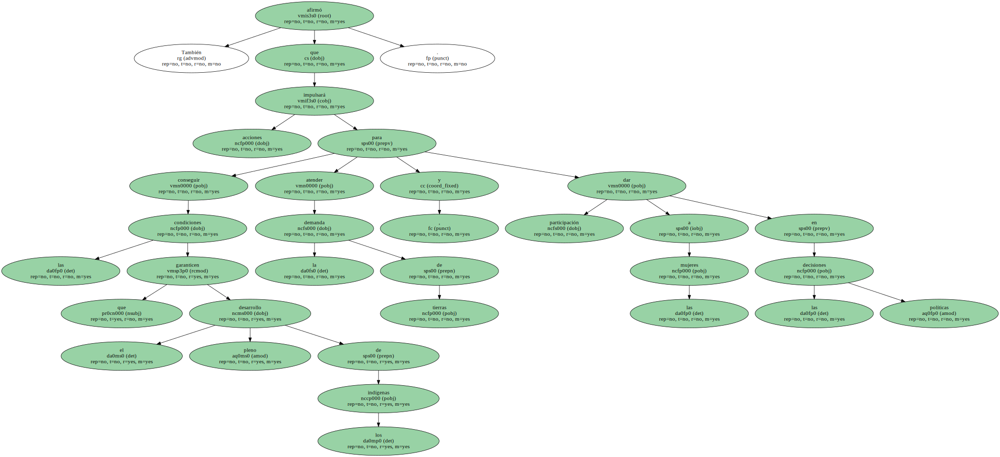Portillo se comprometió a impulsar acciones legales y administrativas para garantizar el resarcimiento a las víctimas del conflicto armado , a colaborar en la búsqueda de los detenidos-desaparecidos y a cumplir con las recomendaciones de la Comisión del Esclarecimiento Histórico ( CEH ).
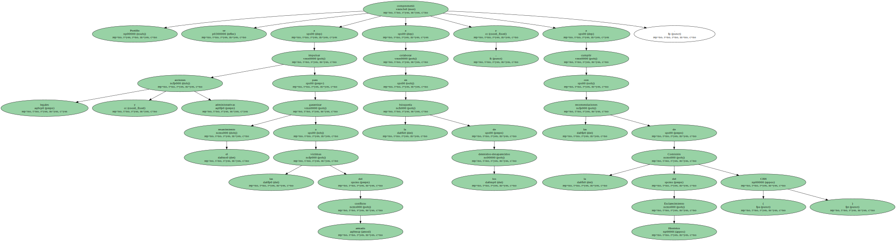El presidente ordenó una investigación interna para establecer las presuntas responsabilidades de agentes del Estado en el " execrable " asesinato del obispo Juan Gerardi , perpetrado el 26 de abril de 1998 , porque su impunidad es " una vergüenza nacional ".

Según la Misión de las Naciones Unidas para Guatemala ( MINUGUA ) , en el crimen del religioso hubo una eventual participación de agentes de los cuerpos de seguridad ilegales y clandestinos que operan en el Estado.
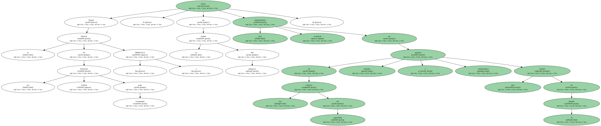Además , Portillo anunció la disolución del Estado Mayor Presidencial ( EMP ) y su órgano de inteligencia , y el desmantelamiento de los poderes paralelos a las instituciones responsables de las investigaciones criminales y de la administración de Justicia que impiden la correcta aplicación de la ley.
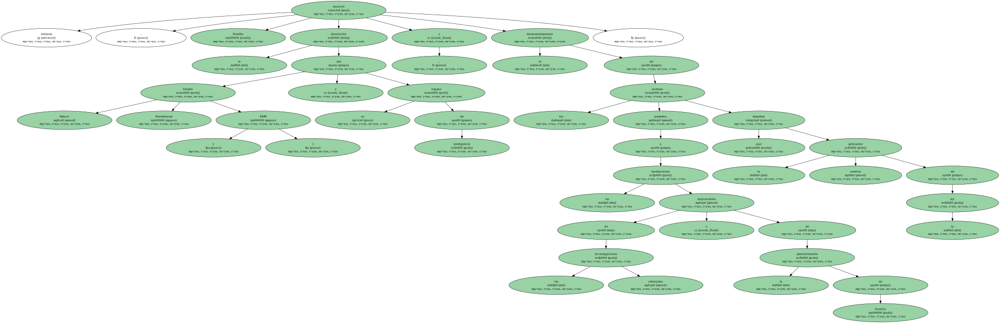En materia de seguridad anunció la profesionalización y la ampliación de la cobertura de la Policía Nacional Civil , reformar el sistema penitenciario y migratorio , y pidió a la comunidad internacional su apoyo para atender ese grave problema.
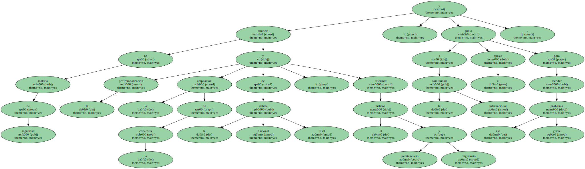Portillo convocó a la sociedad civil y política a un " pacto de gobernabilidad democrática " , para buscar consensos y atacar los profundos desequilibrios que están llegando al límite de lo que puede soportar la economía.
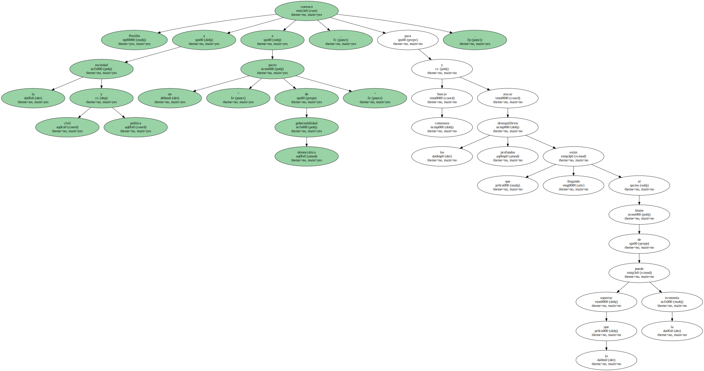También apostó por la integración de Guatemala al mundo como democracia y como Estado , y en ese sentido anunció que dará un nuevo impulso a la zona de libre comercio entre Centroamérica y México , y apoyará la consolidación de la Asociación de Estados del Caribe como parte del proceso de ingreso del área al Tratado de Libre Comercio de Norteamérica.
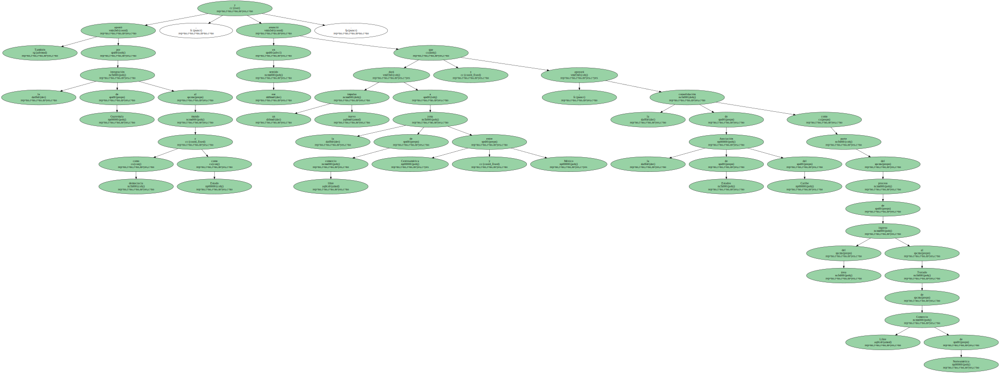Además , impulsará el fortalecimiento del bloque meso-americano que incluya a esas tres zonas para negociar conjuntamente su inserción en el Area de Libre Comercio de las Américas ( ALCA ).
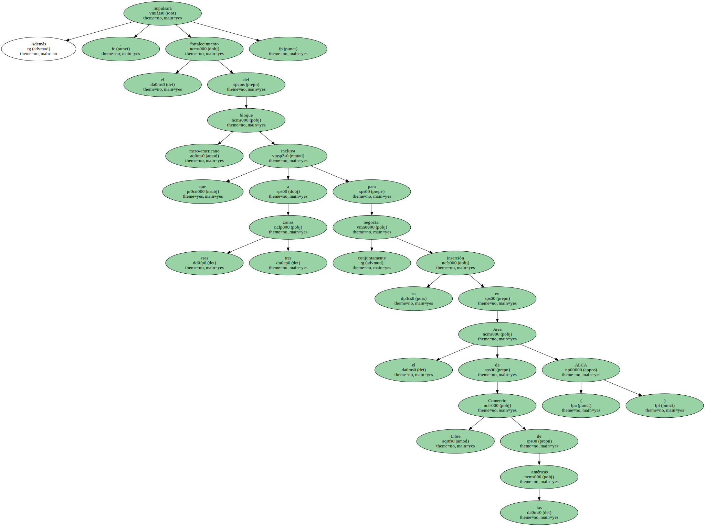A pesar de que le reconoció a su antecesor el haber cerrado el capítulo de la guerra , Portillo dijo que los acuerdos de paz no son el monopolio de un Gobierno , " sino un sendero hacia el futuro que los guatemaltecos nos hemos trazado para lograr una sociedad justa " y que su Administración los asume como " política de Estado ".
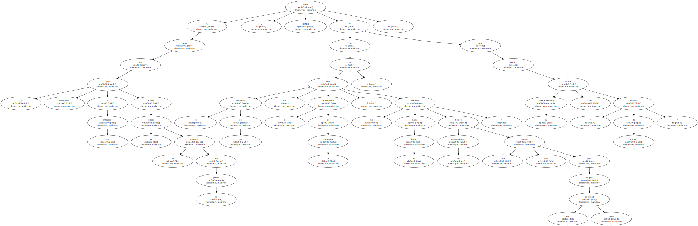